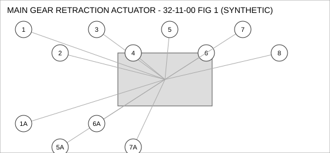
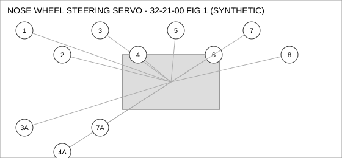
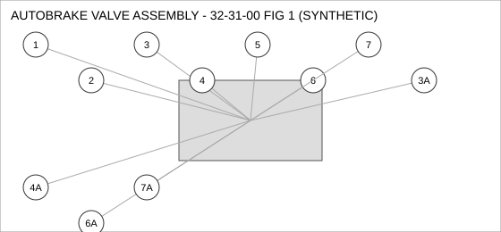

Document type: IPC | Revision: 15 | Fleet: A320
| CODE | AIRCRAFT |
|---|---|
| A | A320ceo |
| B | A320neo |
| C | A321neo |

| FIG ITEM | PART NUMBER | NOMENCLATURE | EFFECT | UPA |
|---|---|---|---|---|
| 1 | D27142630300 | VALVE - SHUTOFF, MAIN GEAR RETRACTION ACTUATOR | B C | 1 |
| 1A | D29888123900 | VALVE - SHUTOFF, MAIN GEAR RETRACTION ACTUATOR | B C | 1 |
| INTERCHANGEABLE WITH D27142630300 WHEN SB 32-0388 IS EMBODIED. | ||||
| 2 | D24677732200 | PUMP - TRANSFER, MAIN GEAR RETRACTION ACTUATOR | ALL | 2 |
| 3 | D23609712000 | SEAL - FLANGE, MAIN GEAR RETRACTION ACTUATOR | ALL | 1 |
| 4 | D20947823600 | BRACKET - MOUNTING, MAIN GEAR RETRACTION ACTUATOR | A B | 1 |
| 5 | D28952967300 | SOLENOID, MAIN GEAR RETRACTION ACTUATOR | ALL | 1 |
| SUPERSEDED BY D25459287900 | ||||
| 5A | D25459287900 | SOLENOID, MAIN GEAR RETRACTION ACTUATOR | ALL | 1 |
| SUPERSEDES D28952967300. D28952967300 IS NOT INTERCHANGEABLE WITH THIS PART (ONE-WAY). | ||||
| 6 | D27106142600 | BOLT, MAIN GEAR RETRACTION ACTUATOR | C | 1 |
| 6A | D28842474700 | BOLT, MAIN GEAR RETRACTION ACTUATOR | C | 1 |
| INTERCHANGEABLE WITH D27106142600 (TWO-WAY). | ||||
| 7 | D20210269900 | SWITCH - PRESSURE, MAIN GEAR RETRACTION ACTUATOR | ALL | 1 |
| 7A | D20669384300 | SWITCH - PRESSURE, MAIN GEAR RETRACTION ACTUATOR | ALL | 1 |
| INTERCHANGEABLE WITH D20210269900 (TWO-WAY). | ||||
| 8 | D26788182200 | ACTUATOR - LINEAR, MAIN GEAR RETRACTION ACTUATOR | B C | 4 |

| FIG ITEM | PART NUMBER | NOMENCLATURE | EFFECT | UPA |
|---|---|---|---|---|
| 1 | D28989607600 | SOLENOID, NOSE WHEEL STEERING SERVO | ALL | 2 |
| 2 | D21467269200 | COUPLING - QUICK DISCONNECT, NOSE WHEEL STEERING SERVO | ALL | 1 |
| 3 | D23099633300 | DUCT - FLEXIBLE, NOSE WHEEL STEERING SERVO | ALL | 2 |
| 3A | D23519368300 | DUCT - FLEXIBLE, NOSE WHEEL STEERING SERVO | ALL | 2 |
| INTERCHANGEABLE WITH D23099633300 WHEN SB 32-2217 IS EMBODIED. | ||||
| 4 | D20370347400 | SEAL - FLANGE, NOSE WHEEL STEERING SERVO | ALL | 4 |
| 4A | D28263724200 | SEAL - FLANGE, NOSE WHEEL STEERING SERVO | A | 4 |
| INTERCHANGEABLE WITH D20370347400 - A320CEO ONLY. | ||||
| 5 | D27480212800 | FILTER ELEMENT, NOSE WHEEL STEERING SERVO | ALL | 4 |
| 6 | D29505618500 | WASHER - LOCK, NOSE WHEEL STEERING SERVO | A B | 1 |
| 7 | D21782438400 | CLAMP - V-BAND, NOSE WHEEL STEERING SERVO | ALL | 4 |
| 7A | D26652137400 | CLAMP - V-BAND, NOSE WHEEL STEERING SERVO | ALL | 4 |
| ALTERNATE FOR D21782438400. PARTS ARE INTERCHANGEABLE. | ||||
| 8 | D24936491600 | BOLT, NOSE WHEEL STEERING SERVO | ALL | 1 |

| FIG ITEM | PART NUMBER | NOMENCLATURE | EFFECT | UPA |
|---|---|---|---|---|
| 1 | D21581021700 | WASHER - LOCK, AUTOBRAKE VALVE ASSEMBLY | B C | 1 |
| 2 | D25970625800 | SENSOR - PRESSURE, AUTOBRAKE VALVE ASSEMBLY | ALL | 1 |
| 3 | D21891179900 | SWITCH - PRESSURE, AUTOBRAKE VALVE ASSEMBLY | B C | 1 |
| 3A | D23912250100 | SWITCH - PRESSURE, AUTOBRAKE VALVE ASSEMBLY | B C | 1 |
| ALTERNATE FOR D21891179900. PARTS ARE INTERCHANGEABLE. | ||||
| 4 | D21854134000 | COUPLING - QUICK DISCONNECT, AUTOBRAKE VALVE ASSEMBLY | ALL | 1 |
| 4A | D27692383100 | COUPLING - QUICK DISCONNECT, AUTOBRAKE VALVE ASSEMBLY | ALL | 1 |
| INTERCHANGEABLE WITH D21854134000 (TWO-WAY). | ||||
| 5 | D22195539700 | DUCT - FLEXIBLE, AUTOBRAKE VALVE ASSEMBLY | ALL | 1 |
| 6 | D25133589700 | CONNECTOR - ELECTRICAL, AUTOBRAKE VALVE ASSEMBLY | A B | 1 |
| SUPERSEDED BY D23209842100 | ||||
| 6A | D23209842100 | CONNECTOR - ELECTRICAL, AUTOBRAKE VALVE ASSEMBLY | A B | 1 |
| SUPERSEDES D25133589700. D25133589700 IS NOT INTERCHANGEABLE WITH THIS PART (ONE-WAY). | ||||
| 7 | D26642595400 | VALVE - SHUTOFF, AUTOBRAKE VALVE ASSEMBLY | C | 2 |
| 7A | D27631876600 | VALVE - SHUTOFF, AUTOBRAKE VALVE ASSEMBLY | C | 2 |
| INTERCHANGEABLE WITH D26642595400 (TWO-WAY). | ||||